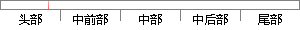

程序状态寄存器的格式如下表2-3所示。
片段位置图

相似结果
相似片段：通用的对象文件格式 CurrentProgramStatusRegister,当前程序状态寄存器 Electronic...(1)处理嚣状态,ARM体系支持7种处理器模式,如表2-3所示表2-3各种处理器模式...
| 标题 | 《基于ARM和μClinux的嵌入式系统研究与应用》 |
| 对比库 | 中国学位论文全文数据库 |
| 作者 | 杜志 |
| 机构 | 天津大学 |
| 分类 | 通信与信息系统 |
| 年份 | 2004 |
| 相似率 | 87.5% （严重抄袭） |
※ 片段修改建议 ※
近似词参考：- 格式：格局 花式 花样 晚餐 款式
- 状态：状况
- 程序：法式 步伐
系统自动生成语句：法式状况寄存器的格局如下表2-3所示。
注：本片段修改建议为系统自动生成，仅供参考。